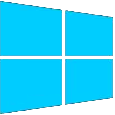

|  |
Okna8 |
Добро пожаловать в Okna8!
Дизайн Okna8 основан на дизайне ОС Microsoft Windows 8 и пытается его копировать.
Скопировать его идеально, разумеется, невозможно. У Windows 8 много сложных анимаций и тому подобных, одним словом, украшательств. Я - разработчик, делаю всё возможное, чтобы дизайн был максимально похож на оригинал.